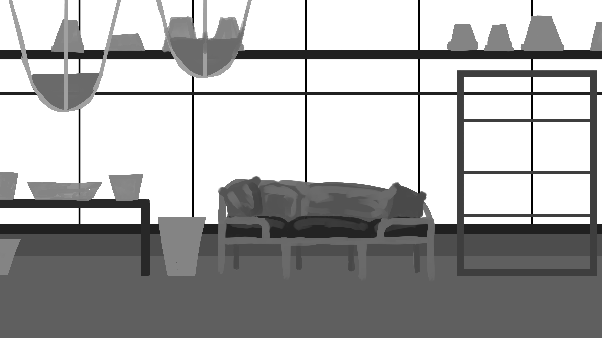

Concept sketches for Atlas. They will be wearing a collar with a small crystal attached to it. I want to incorporate
the crystal into the gameplay somehow.
Storyboards for the opening cut scene of the game.
Main garden area concept sketch. This also includes some interaction notes and the color palette.
WEEK 1
Art & Animation
Before I could do any animation, I needed references. Natural movement and fluidity are very important as so the movement does not look stiff
or weird. I reached out to a close friend of mine, El Jors, who has a black Newfoundland and asked for video references for various
motions including: running, walking, jumping, sitting, laying down. I took the videos and split them up into individual
frames to use as direct references for animation.
The collection of reference frames for animation
Music
HamRum is one of my closest friends and she offered to produce the music for Monody. We worked in tangent with each other. She completed
temp music for the menu screen of Monody.
Unity
I accomplished more in Unity than expected this week. I set up some basic movement controls (left, right, jump) and imported some assets
for testing. I began brainstorming ideas for the tutorial level and opening puzzle for the game.
Brainstorm page for the tutorial level of Monody
WEEK 2
Weekly Goals
Create menu screen
Brainstorm grief narrative
Complete opening cutscene animatic
Complete Atlas walk animatic
Create backgroudn art sketches for cutscene
I accomplished almost everything I wanted to this week. Unfortunately, I was not able to complete all the sketches for the cutscene that I wanted.
I always keep the feedback I receive in mind when I am working on my project.
I learned a lot about Unity this week and I also found some new resources/programs that I could potentially use for my project.
Storytelling & Writing
Art & Animation
Sketch of the town backround art for the opening cutscene
Video of Atlas' walk animation, iteration 1.
Animatic for the opening cutscene.
Music
Main Theme Temp Music
Cutscene Iteration 0
Unity
Video of a working menu screen and movement controls in Unity.
WEEK 3
Weekly Goals
Complete background art sketches, start painting
Map out the tutorial level in Unity
Begin creating necessary assets for gameplay (Watering can, plants)
Make menu screen look nice
Start cleaning up animations
Create animatic for jumping movement
Time is a very valuable resource for me this semester, and unfortunately I lost a lot of it from visiting my parents over the weekend.
I made progress on the background art. Unfortunately, I was not able to do as much as I would have liked with the animation because I had to
overhaul my animatic twice this week. Fortunately, however, I created a jumping animation, updated the menu screen in Unity, and worked
out the exact size of my tutorial level for the game. I also started working on the background art for the tutorial level. I collected resources
and references for assets I need for my game.
HX Testing Round I
For round 1 of the HX Testing, I approached people that I planned to get feedback from with information about the current state of my story and animatic.
Below I have summarized all of the feedback received for the HX Testing Round I.
Feedback: Ollie Oxenfree
Having "something" calling out to Atlas is not relatable to the audience. If something "called out" to Atlas, that implies a higher power and
the message of the story would be lost (Monody is a story about healing from grief, I do NOT want my story to tell the audience "if you're
depressed, "God" will reach out and help you")
Atlas needs to find purpose by themselves, not have it beamed from the great beyond
Atlas must have agency. Atlas (and by extension, the player) having agency is the key to making the story work
Feedback: Megan Leahy
In the town, add some silhouettes of people to make it feel more lively.
Feedback: El Jors
You don't want to spell out the owner's death to the audience
Have Atlas pick up the scent of their owner which leads them to a cemetery. An item that once belonged to the owner
will be on the grave
Feedback: Ryver Zinkle
The animatic, as it was, did not properly communicate what was happening (Atlas' owner dying) to the audience. It looked as if Atlas was
simply bored and had nothing to do
I learned a lot more about good storytelling and the general process I need to follow to build my story up and tell it in an organic
and relatable way. I will implement most of the feedback I got for my animatic. I am learning how to ask myself the important questions
I need to know the answer to when writing a story.
Storytelling & Writing
The story went through a major overhaul this week. I scrapped my solution that I proposed last week. My proposed story last week was that months after
Atlas loses their owner, a light calls to them and leads them to an abandoned greenhouse. Upon receving feedback and critique on this story point,
I decided to go back to my original idea where the garden was tended by Atlas and they stopped after their owner died.
The garden will be Atlas's /thing/. Atlas started the garden, but their owner enhanced the experience. Atlas started and maintained the garden for their
own sake and they will restore it, not for their owner, but for themselves. After their owner passes, Atlas finds it hard
to continue taking care of the garden because of the devastating loss of their partner who supported them and helped them in their own pursuits. But,
after some time, they will continue their personal pursuit of caring for the garden.
The end of my game will feature Atlas planting seeds on their owner's grave, which blossom into beautiful flowers.
Art & Animation
Because the story was overhauled the animatic followed suit.
Music
The music's production is in tangent with the art and animation. The animatic was having major adjustments done this week,
and because of this, no new music was created.
Unity
WEEK 4
Weekly Goals
Animate Atlas walking in cutscene
Animate cemetery scene
Start the background art for cemetery in spring
Complete in-game greenhouse background and forest background (for cutscene)
Code being able to pick up object in Unity
Import walking and jumping animations into Unity for testing
The only things I did not accomplish this week were importing the jumping animation into Unity and completing the in-game greenhouse background.
I integrated the feedback I received by. I learned about background design and a bit about Unity. I also found a new resource that I will
talk about below in the Art & Animation section. I have been working non-stop on Monody, however life is chaotic and I lose a lot of time
from random things popping up. I also struggle with ADHD, which can be very debilitating.
Storytelling & Writing
Since the story is now finalized, major strides in the writing are no longer required. This week I brainstormed with
a couple of people to build upon the story that I have set and spent a little bit of time considering minor details that will enhance
the writing and experience. For example, I decided that the cutscene will show Atlas and their owner planting a special flower. Months
later, when Atlas returns to the greenhouse, that flower will still be alive, and it will be the reason Atlas ultimately begins restoring
the greenhouse. This element will provide emotional continuity for the viewer, as well as a more rounded story.
Art & Animation
This week was heavy with art and animation. The painted backgrounds below took a total of 3 hours. One of this week's goals was to animate
Atlas walking in the cutscene. It does not look like much, but this took a tremendous amount of time, especially since the timing of the
frames had to be readjusted occasionally.
A colored painting of the forest that will be seen in the opening cutscene
A black and white painting of the cemetery that will be seen in the opening cutscene
An amazing resource I found this week is a program called PureRef. It allows me to compile all of my references, concept art, and boards
for Monody in one place.
Music
Some work was done on already-existing music. Music for the cutscene will begin production on week 5.
Unity
I did a couple of hours of work in Unity this week. First off, I coded the ability for Atlas to pick up and drop items, as I want the
tutorial level to require this mechanic. It is not perfect, but it works and can be fine-tuned later. The other aspect I implemented was
the walking cycle animation whenever the player is moving. I was pleased to see that it looks good. There are a couple of unwanted
behaviors dealing with the animation (it does not stop immediately when the player stops moving), but that can and will be troubleshooted
in the future.
A video demonstrating the current Unity mechanics
WEEK 5
Weekly Goals
Create rough paintings for all backgrounds
Get references for human animation
Begin human animation
Create watering can and box sprites
Unfortunately, I did not get nearly as much done as I would like to this week. A combination of stress, burnout, and art block has impeded my ability
to work efficiently on my project, and I believe I need a little bit of help to get myself back on track.
Art & Animation

MENTOR BLOGS
Mentor Blog 1 | Megan Leahy
Megan Leahy is my mentor for my animation for Monody. I have checked in with her a couple of times to review my animatic. The first time around she
suggested I make the scenes feel more lively by having silhouettes walking around in the background. The second time around, she suggested I added
ambient animations to the stills that will be present in my cutscene. Even though the stills will not be actively animated, I need to have movement and
life present as it will feel out of place if the shots are entirely stagnant. I believe using a combination of CSP and Adobe After Effects may be an
effective and powerful way to combine tools to create a final cut that I am truly proud of.
Mentor Blog 2 | Ollie Oxenfree
I have been talking extensively with Ollie the past several weeks about Monody and its story. Ollie is a professional and creative writer, who is very
knowledgeable on the fundamentals of storytelling and narratives. The advice that Ollie has given me is extensive. When talking to him about Monody,
he wanted to make sure I have a clear idea of a couple of key things in my story: